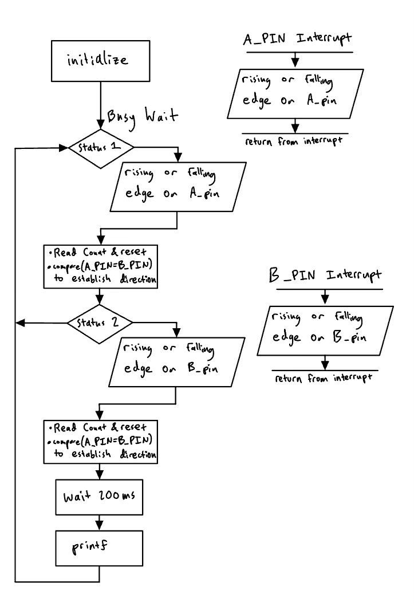
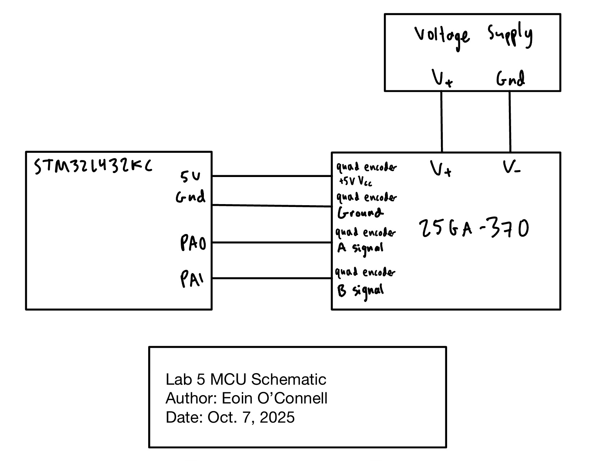

Lab 5: Interrupts
Introduction
This is the second Lab in E155 working with microcontrollers. The goal of this lab is to get comfortable with interrupts through designing an algorithm to sense quadrature encoder pulses and convert these into motor velocity and direction.
Design and Testing Methodology
The primary challenges of this lab are in the setup of the interrupts themselves. There are 4 possible interrupts, a rising or falling edge at A, or a rising or falling edge at B. This gives us all the information we need to be able to determine both velocity and direction.
Interrupt Based Code vs Polling Based Code
Interrupts are better than manual polling because they allow the microcontroller to respond immediately to encoder signal changes without constantly checking pin states in a loop. This makes the system far more efficient, as the CPU can perform other tasks while waiting for events instead of wasting cycles on continuous polling. At high speeds, interrupts also ensure more accurate and reliable pulse detection, since polling may miss transitions that occur faster than the loop’s execution rate.
To have correct data, we need to satisfy the Shannon-Nyquist theorem that \(f_{sample} \geq 2 * f_{max}\). For manual polling, we need to pick a sampling rate and if the frequency of the motor hits a certain threshold then we will have aliasing, where it will read a lower frequency.
Interrupt servicing is almost always much faster than polling loops, meaning that we can detect a much higher max frequency before aliasing or any other issues arise.
Flow Chart
My program uses an infinity loop consisting of a busy wait that is exited due to interrupts signalling a change in pin A or pin B. Then it does some calculations and measurements before entering the busy state again.

Segger Testing
Before ever flashing the MCU or connecting the motor, I tested my code in Segger Embedded Studio, loaded with drivers and packages for my STM32L432KC MCU. This allowed me to test that my code was working as intended. I looked into the relevant registers ensure that the timers were working as intended.
Frequency and Direction Calculations
Frequency
To measure the frequency I measure the time between two interrupts using a timer. The timer runs off the 80 MHz PLL, with a prescaler of 79 to give a 1 Mhz clock.
\[f_{\text{motor}} = \frac{f_{\text{timer}}}{(\text{\# of cycles between edges}) \times \text{PPR} \times \text{(\# of edges)}}\]
The motor in lab has \(PPR = 408\), and there are 4 edges (rising and falling edges at A and B). Thus we get the following equation:
\[f_{\text{motor}} = \frac{f_{\text{timer}}}{(\text{\# of cycles between edges}) \times 1,632}\]
Technical Documentation:
The code for my project can be found on my github page. Lab5 Github Repository
Schematic

Figure 2 shows the physical layout of the design. It shows the microcontroller Pin 6, which has the audio output, first going through a 50 k\(\Omega\) potentiometer to be able to adjust the volume. Then this output goes into the LM386 audio amplifier. By connecting 5V to pin 6, ground to pin 2, and the input to pin 3, and not connection any other pins, we get a gain of 20. This allows us to get a higher voltage output then would have been possible then straight out of the MCU.
Finally, the amplifier output goes to a 8 W, 4 \(\Omega\) speaker.
Results and Discussion
I have not gotten the MCU to work correctly yet. I plan to get this working in the next few days.
Conclusion
I am still getting errors in segger and have not tested it on the MCU yet. I have spent 10 hours so far.
AI Prototype Summary
LLM Prompt:
Write me interrupt handlers to interface with a quadrature encoder. I’m using the STM32L432KC, what pins should I connect the encoder to in order to allow it to easily trigger the interrupts?
void Encoder_GPIO_Init(void) {
RCC->AHB2ENR |= RCC_AHB2ENR_GPIOAEN;
GPIOA->MODER &= ~((3 << (0*2)) | (3 << (1*2))); // input mode
// Enable EXTI lines 0 and 1
RCC->APB2ENR |= RCC_APB2ENR_SYSCFGEN;
SYSCFG->EXTICR[0] |= 0x0000; // PA0->EXTI0, PA1->EXTI1
EXTI->IMR1 |= (1 << 0) | (1 << 1);
EXTI->RTSR1 |= (1 << 0) | (1 << 1);
EXTI->FTSR1 |= (1 << 0) | (1 << 1);
NVIC_EnableIRQ(EXTI0_IRQn);
NVIC_EnableIRQ(EXTI1_IRQn);
}
volatile int32_t position = 0;
void EXTI0_IRQHandler(void) {
if (EXTI->PR1 & (1 << 0)) {
EXTI->PR1 |= (1 << 0);
int b = (GPIOA->IDR & (1 << 1)) ? 1 : 0;
position += (b ? -1 : 1);
}
}
void EXTI1_IRQHandler(void) {
if (EXTI->PR1 & (1 << 1)) {
EXTI->PR1 |= (1 << 1);
int a = (GPIOA->IDR & (1 << 0)) ? 1 : 0;
position += (a ? 1 : -1);
}
}